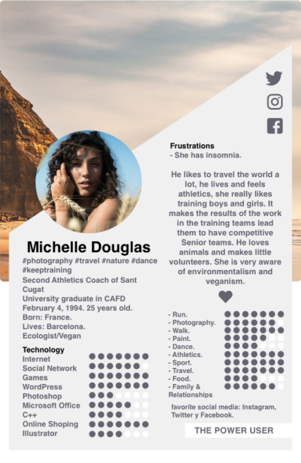
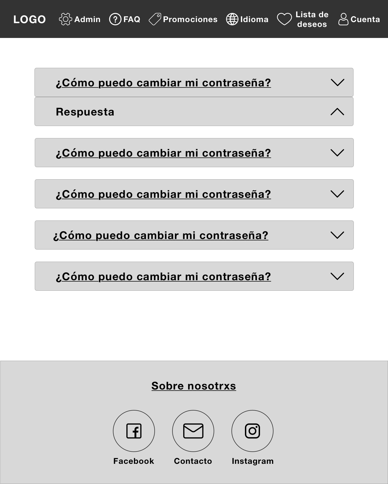
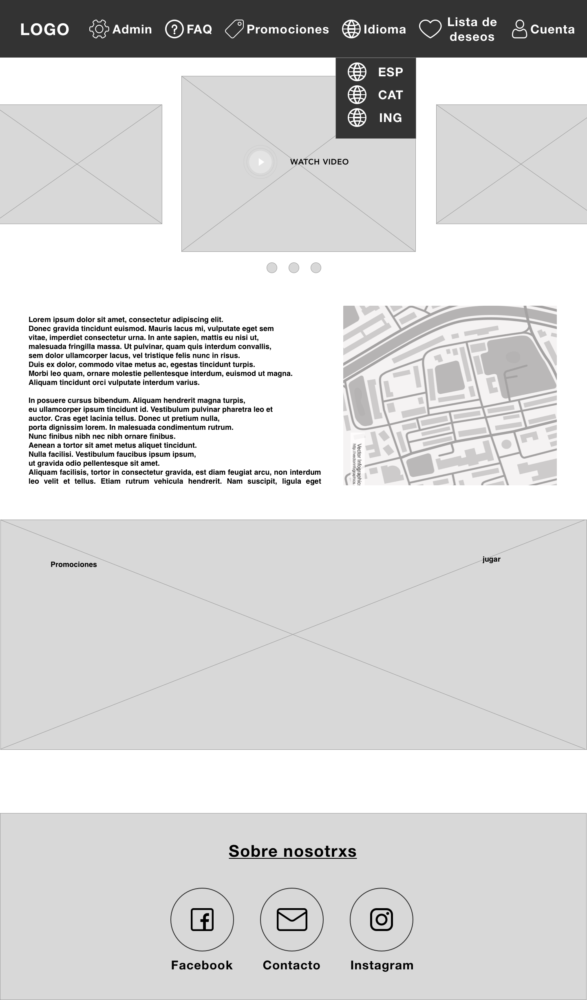
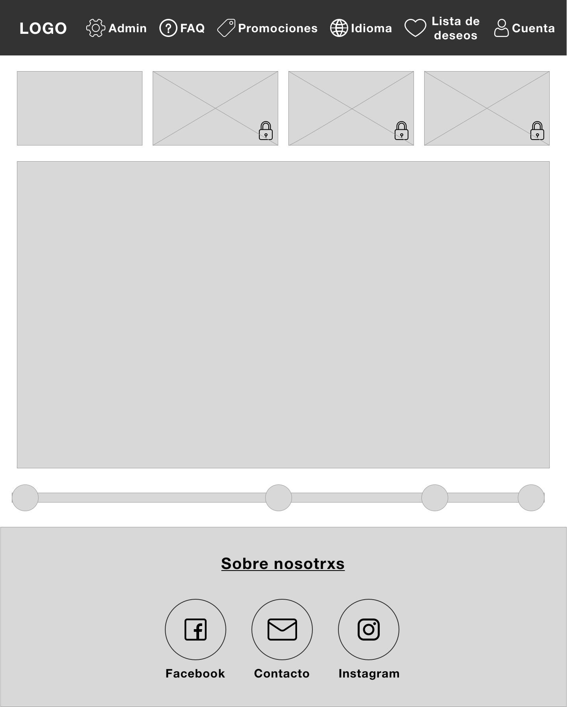
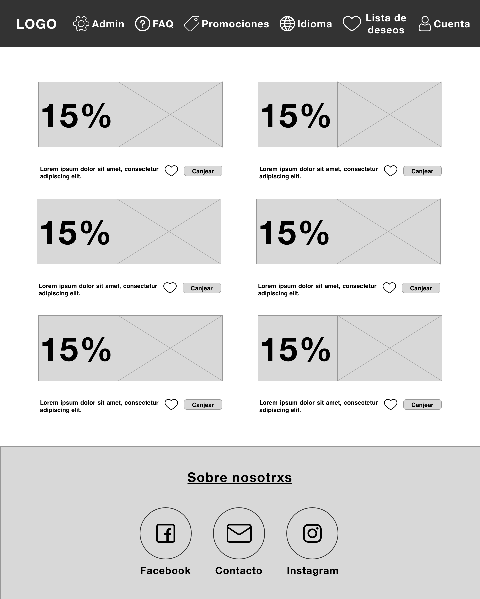

RE-COMERÇEM
Este proyecto tiene como fin divulgar y potenciar los mercados locales
a través de una aplicación WEB, en concreto, nos enfocaremos en el
Mercat de la Concepció, que por causa de la Covid se han visto afectados.
-MERCADO DE LAS FLORES 0:14: Mercado muy famoso en Barcelona por
su particularidad de venta de flores las 24hr del día los 365 días del año.
-MULTIMEDIA 1:42: Enganchar a futurxs clientxs a través de la promoción,
contaremos un poco de la historia del juego, eventos especiales,
las paradas que se encuentran en el Mercado y un Mapa para poder llegar.
-JUEGOS 3:11: Cuatro juegos con una historia lineal para enganchar al usuarix
ganando puntos para promociones y ofertas.
-CUENTAS 5:02:
· Usurix→ Tendrán que registrarse para poder jugar y acumular
puntos/promociones para luego canjearlos,
podrán hacer su wish list y llegar a sus objetivos.
· Administración → Panel para administrar usuarixs y admins, dar de alta
y editar nuevas promociones,
editar los puntos ganados en cada juego, ver el historial de juego,
entre otras opciones.
-CONTACTO 7:13: Contacto del grupo, un formulario reservado para
preguntas/sugerencias de lxs clientxs y un mapa del centro(CEP).
-IDIOMA 7:27: 3 idiomas para intentar abarcar a más público,
incluyendo turistas.
-SOBRE NOSOTRXS 7:43: Una pequeña descripción del grupo, CEP y de cada unx
de sus integrantxs.
-FAQ 7:59: Preguntas frecuente

Nos hemos centrado en el público con ingresos, que vive independiente.
Podemos clasificarlo en 2 tipos de clientes:
·Público joven/adulto: Este tipo no suele estar acostumbrado a comprar en los mercados,
sin embargo, les suele gustar las compras y sobre todo las ofertas. Por ello,
con las promociones de nuestra página queremos atraer a este tipo de público,
fomentar las compras en el mercado con sus productos ecológicos que son de mejor calidad que los del
supermercado donde suelen realizar sus compras.
·Público mayor: Están acostumbrados a comprar en el mercado, por ello, queremos fidelizarlos con descuentos.
Para poder ganarlos pueden pedir ayuda a sus nietos/as que están más actualizados con estas tecnologías.
WIREFRAMES











COLORES

Son los colores de la paleta del Mercat de la Concepció:
El Naranja representa y da esencia de juventud, frescura y extroversión.
Es un color que asociamos con la fruta.
Nuestros juegos tienen una historia lineal.
El protagonista, que es un trabajador del Mercat de la Concepció, debe llegar a su puesto de trabajo.
Para ello, primero debe ir por las calles evitando los obstáculos que se le aparecen.
Una vez llegado a la puerta del mercado, las plantas carnívoras de la parada de la floristería
le defienden contra el maligno coronavirus.
Una vez dentro del mercado, debe ordenar los productos en su
correspondiente parada que han llegado en cajas de Mercabarna, el mayorista del Mercado.
Una vez están ordenados los productos, debe atender a los clientes que se van presentando en su puesto, la frutería.